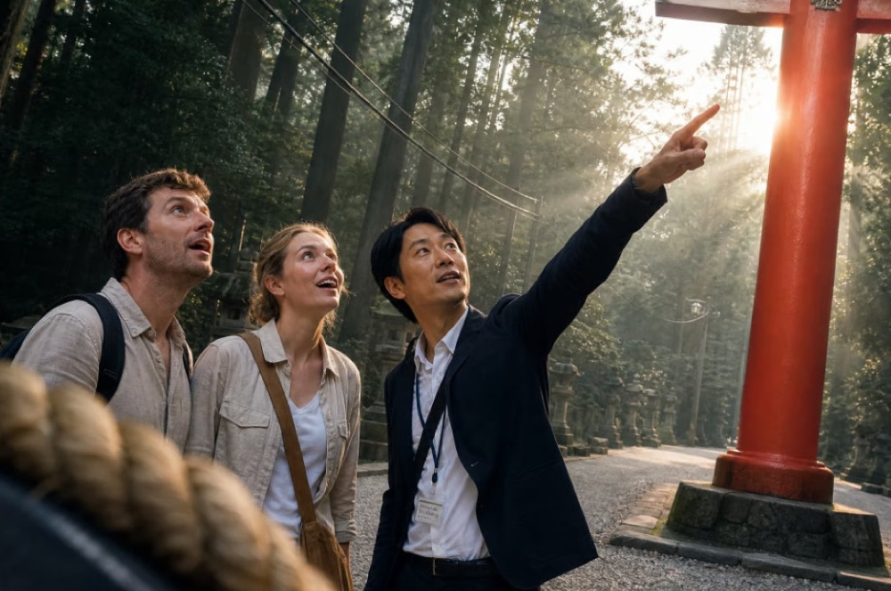

At a special price, explore the side of Tokyo only locals know — a set of small-group walks made exclusively for guests of our partners.
Book one person per reservation. Each guest should make their own booking on GetYourGuide rather than one person reserving for the whole group — this is how the survey stays tied to each participant.
A guided walk through a real cemetery, exploring Japanese urban legends, ghost stories, and local folklore with an experienced local guide.
Reserve on GetYourGuide →Look for the "Monitor Survey Ticket" option
Discover Akihabara's unique vending machine culture on a hands-on walk, exploring Japan's fascinating world of unusual vending machines and the everyday culture behind them.
Reserve on GetYourGuide →Look for the "Monitor Survey Ticket" option
Discover Japan's LGBTQ history on a guided walk through Shinjuku Ni-chome, tracing its roots from the Edo period to today's vibrant LGBTQ community and nightlife.
Reserve on GetYourGuide →Look for the "Monitor Survey Ticket" option

At the Main Shrine, take part in authentic Japanese shrine rituals. Learn how to bow, purify your hands, and offer prayers, experiencing the traditions firsthand with your local guide.
Reserve on GetYourGuide →Look for the "Monitor Survey Ticket" option
These walks are offered at a limited-time monitor price of ¥1,000 while we gather feedback to help us improve our tours.
Each walk is led by our experienced guides and follows the exact same route and includes the same content as our regular tours.
In return, we ask all participants to complete a short survey after the tour. Your feedback helps us make each walk even better.
Gappy is a Tokyo-based travel tech company offering English-language walking tours for international visitors.
Each walk takes you beyond the typical tourist spots to discover a different side of Tokyo through its local culture, history, and hidden stories.